Google Maps Plans: Live Gap Resolution for Leisure Planners
Role: UX & Product Strategy Capstone (Personal Project)
A UX and product strategy capstone built around a five-part planning flow and interactive prototype.
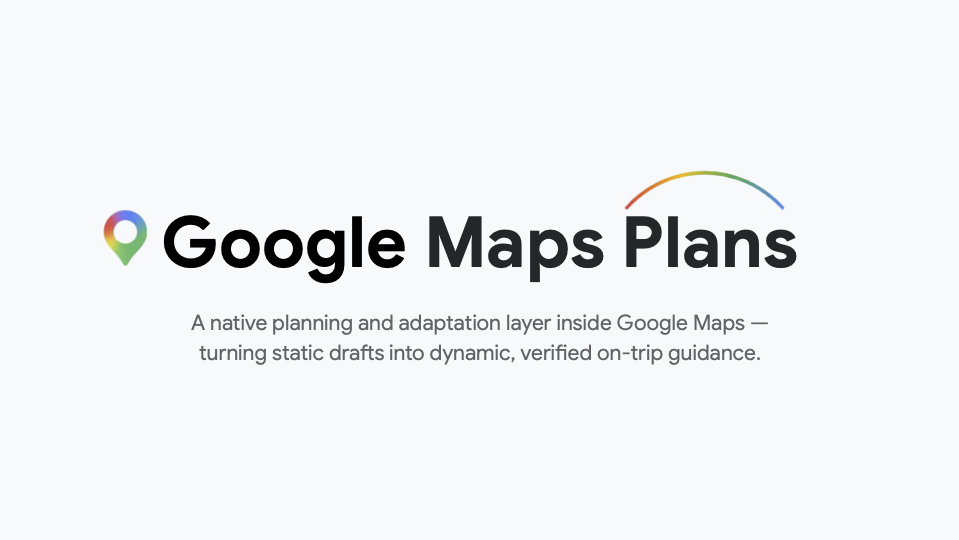
1. The Street-Corner Problem
Mid-trip schedule shifts—like finishing lunch at 1:07 PM with over two hours before the next stop—turn static itineraries back into frantic swiping and group coordination.
- Pre-Trip Fragmentation: Travellers spend weeks saving spots, drafting ideas in Ask Maps, and aligning across spreadsheets and chats.
- Mid-Day Breakdown: When timing shifts on the ground—such as wrapping up lunch early at 1:07 PM with the next stop (Green Oasis at CapitaSpring) not until 3:30 PM—static plans break down and everyone stands under the midday sun asking, "Eh, so where to next?"
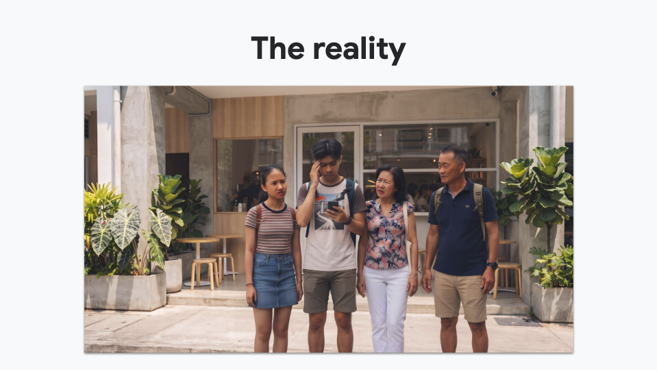
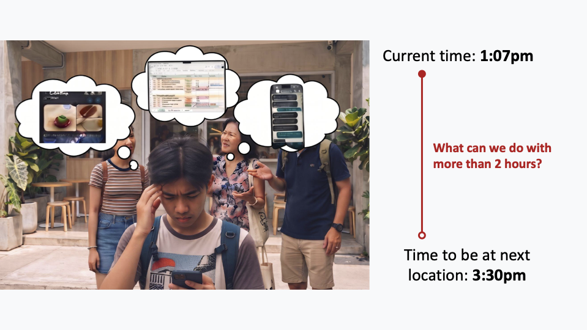
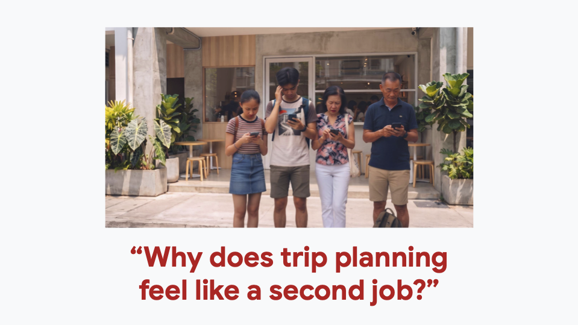
2. Discovery & Why It Matters
Building on the n = 55 discovery study in Case Study 04, pre-trip planning leaks 81% of users off-platform into spreadsheets and chats, while over 50% of planners struggle with scheduling, logistics, and group preferences mid-trip—making in-app adaptation vital for session time and local discovery.
- Pre-Trip Leakage & Planner Struggles: Nearly three-quarters save spots in Google Maps, yet 81% leave to organise plans across spreadsheets and chat apps; during the trip, over 50% of surveyed planners (n = 55) struggle with logistics (56.8%), scheduling (54.5%), and group preferences (50%) when plans need to adapt on the ground.
- Habit Fit & AI Control: Maps plus everyday chat apps (WhatsApp/Telegram) win on lowest shared effort without extra downloads, while standalone AI planners see 1 in 42 retention when users still manually cross-check live hours and routes.
- Stakes for Google Maps: Leaving the trip layer to external tools risks losing active on-trip sessions and high-intent local discovery.
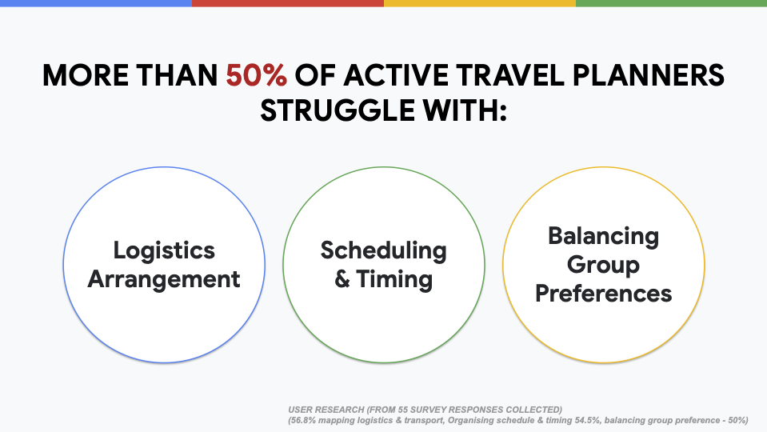
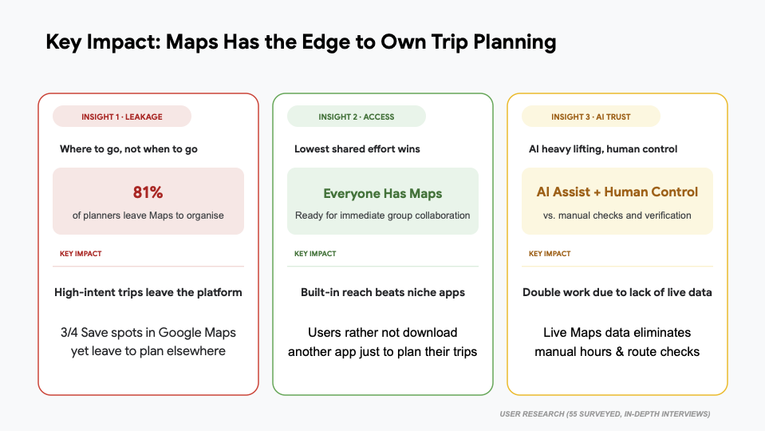
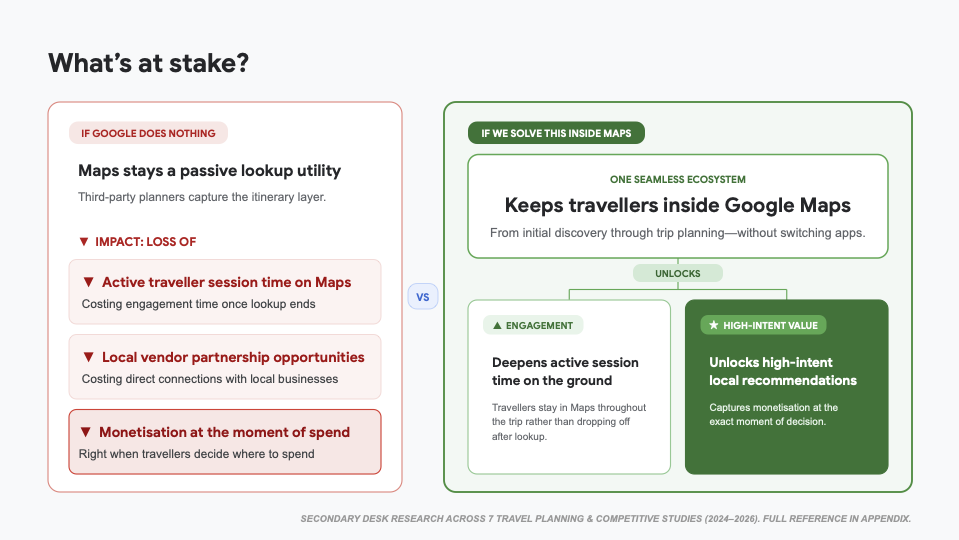
3. Framing, Scoping & Prototyping Pipeline
How Might We help leisure planners effortlessly adapt pre-planned itineraries to real-time changes on the ground without replanning cognitive load?
Scoped lean—cutting all-in-one trip-hub bloat to focus on real-time gap resolution and quick manual control.
Frame & Flow
Ran Idea Beetle ideation and mapped the core street-corner decision flow.
State Logic
Drafted and refined system states, branching paths, and itinerary update rules before UI layout.
First UI Draft
Generated the initial interactive screen layouts to validate hierarchy and pacing quickly.
Live Build & Polish
Built and iterated the live web prototype, moving from early VS Code tests into Antigravity IDE with GitHub and Netlify previews for CSS and layout tweaks.
6-Task Breakdown
Mapped frame-by-frame screens across all six user tasks to prepare structured usability testing flows.
- Lean Scoping & Trade-Offs: Cut heavy all-in-one features (budgets, packing checklists, full group co-editing) to focus on real-time gap resolution and quick manual control (Maps already owns the where—now it can take the weight off when and what's next).
- Six Mapped Tasks Across Five Core Features:
- Save an Ask Maps itinerary
- Locate saved plan
- Fill an immediate gap (Bounce)
- Add a specific place (Search)
- Revisit an earlier stop
- Drag-and-drop reschedule (Adjustments)
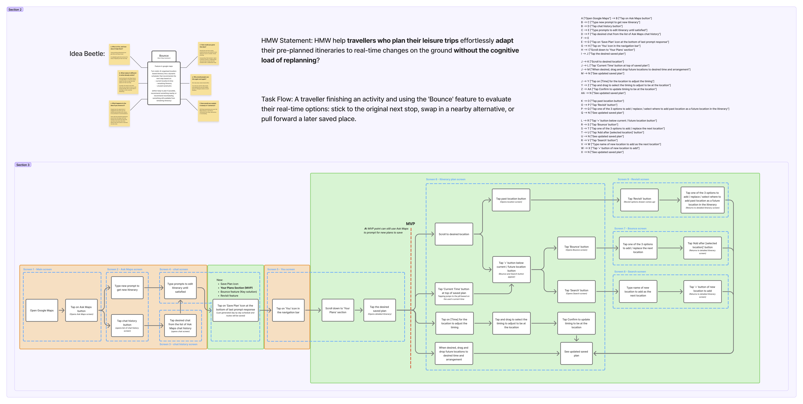

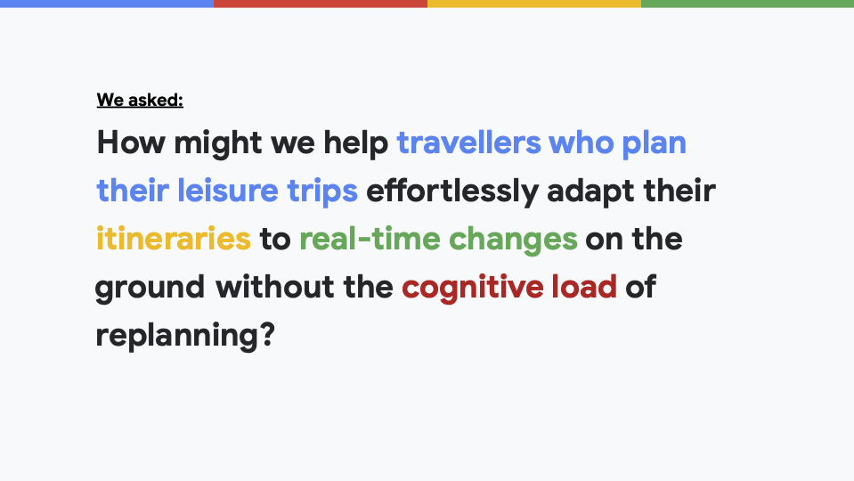
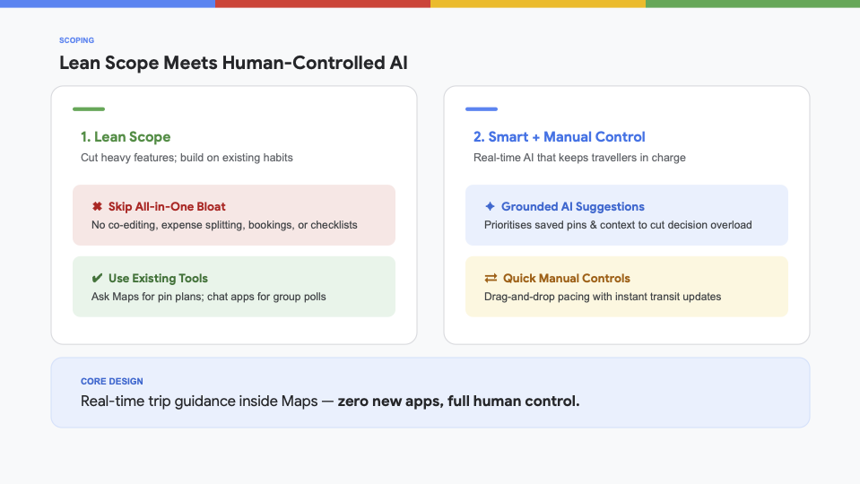
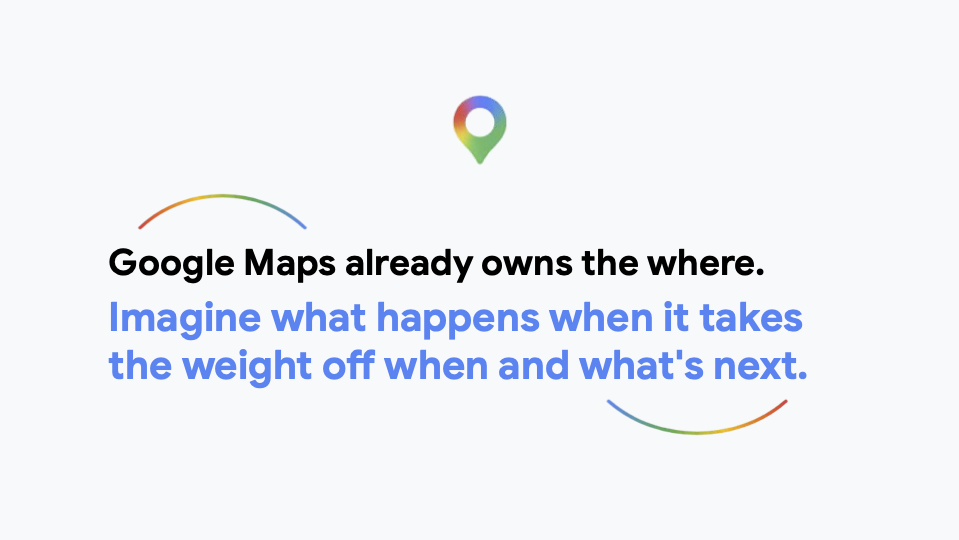
4. Solution & Live Prototype
Five connected features—Save Plan, Bounce, Search, Adjustments, and Revisit—tested through a Singapore staycation scenario and live at bounceproto.netlify.app.
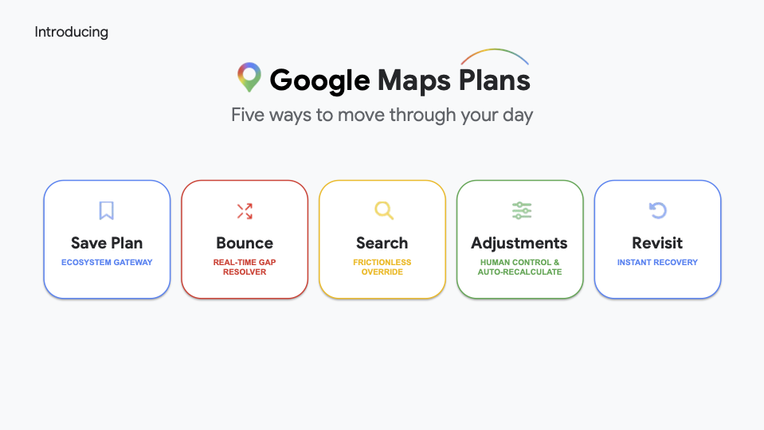
Try the Interactive Prototype
Walk through John's live Singapore staycation scenario—including Bounce gap resolution, Light Mode, Search, Adjustments, and Revisit.
- Five-Feature Architecture:
- Save Plan: Keeps itineraries inside Google Maps and shares live links instead of spreadsheets.
- Bounce: Surfaces real-time nearby options when timing shifts; primary monetisation lever.
- Search: Inserts requested stops directly into the schedule.
- Adjustments: Reorders timing and stops with automatic route recalculation.
- Revisit: Brings back earlier spots without starting a fresh search.
- Staycation Walkthrough (John & Family): John shares a Save Plan link pre-trip, taps Bounce at 1:07 PM after Kobashi finishes early, toggles Light Mode in bright midday sun, adds Maxwell Food Centre, inserts Boat Quay via Search, adjusts pacing around Loulouca, and uses Revisit for morning coffee spot Kahve.
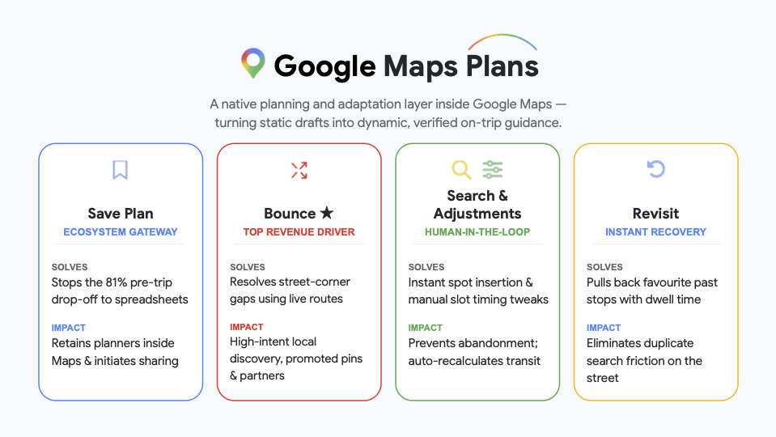
5. Impact, Growth Loops & Metrics
Grounded in first principles, Singapore represents a conservative $150,000 Year 1 ad-revenue floor (~$410/day) before domestic staycationers, APAC, or global scale, paired with Product Usage and Marketplace loops.
- Formula & Where Each Number Comes From:
500,000 planners/mo × 20% Save Plan retention × 25% Bounce tap × $0.50 CPC × 12 months = $150,000 / year (~$410/day)
A conservative single-city floor before domestic staycationers, APAC, or global scale:
- 500,000 planners/mo: Derived from Singapore Tourism Board (STB) / SingStat monthly visitor arrivals, discounted to isolate active leisure planners (excluding transit visitors and domestic staycationers).
- 20% Save Plan retention: Grounded in the 81% off-platform organisation drop-off insight as a conservative recovery share keeping planners inside Maps.
- 25% Bounce tap: Conservative share of retained planners tapping a promoted pin on a Bounce gap prompt.
- $0.50 CPC: Grounded in WordStream / LocaliQ 2026 Google Ads CPC benchmarks, discounted ~75% for local/APAC in-map discovery.
- 12 months: Annualised Year 1 floor for Singapore alone.
- Growth Loops & Phase 2: Product Usage Loop (viral Save Plan link sharing) and Marketplace Loop (foot traffic driving local merchant value), ahead of Phase 2 group collaboration.
- Metrics — Purpose & Target Benchmark:
- Live Bounce Feature Adoption Rate (Primary): Purpose: Tracks whether travellers actively use Bounce when schedules shift mid-trip. Target benchmark: ~25% of retained Save Plan users engaging Bounce during gap/change moments.
- Ask Maps-to-Save Plan Conversion Rate: Purpose: Tracks capturing pre-trip Ask Maps drafts into persistent in-app itineraries instead of leaking to external sheets/chats. Target benchmark: ≥20% conversion/retention lift over baseline off-platform drop-off.
- Multi-Day Within-Trip Retention Rate: Purpose: Measures whether saved plans remain useful across multiple days rather than being abandoned after Day 1. Target benchmark: Consistent day-over-day return across multi-day itineraries without heavy manual re-entry.
- Costs & Ad-Fatigue Guardrail: Beyond build effort and ongoing routing/AI compute costs, the primary risk is ad fatigue—mitigated by prioritising a traveller's own saved places and genuine walking proximity before promoted options.
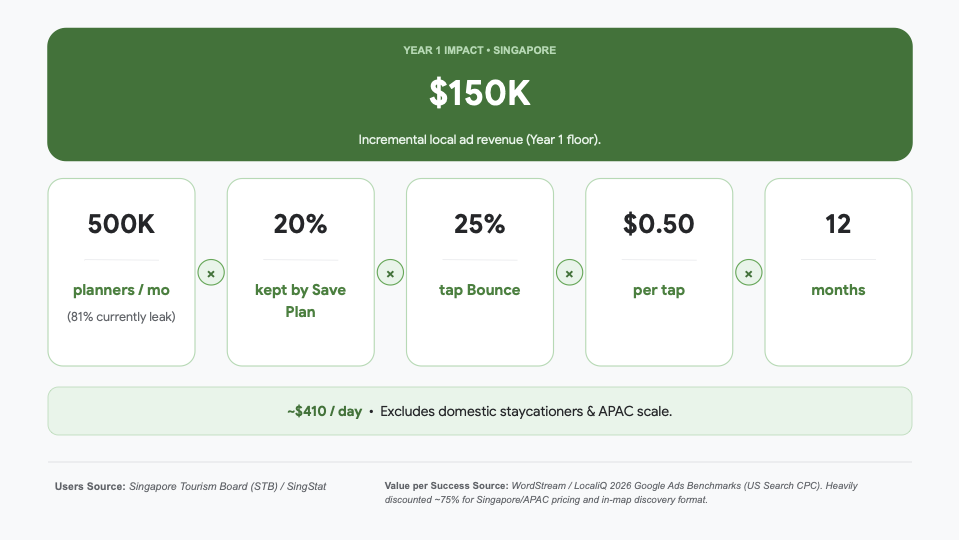
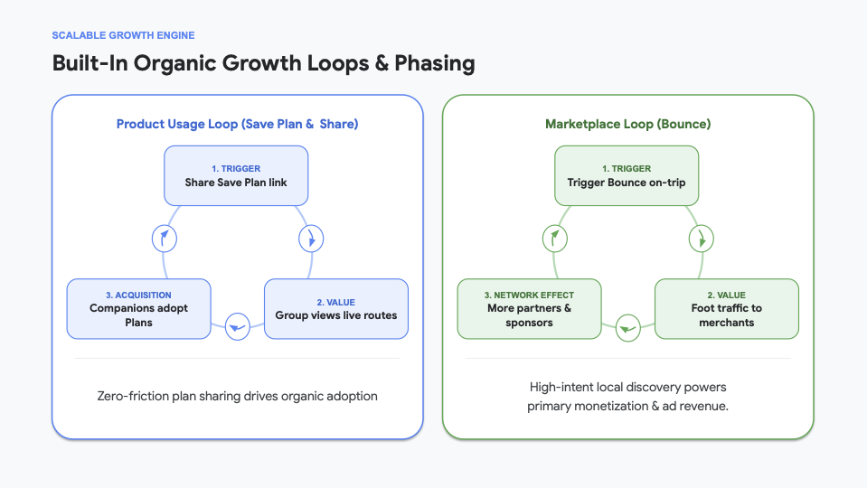
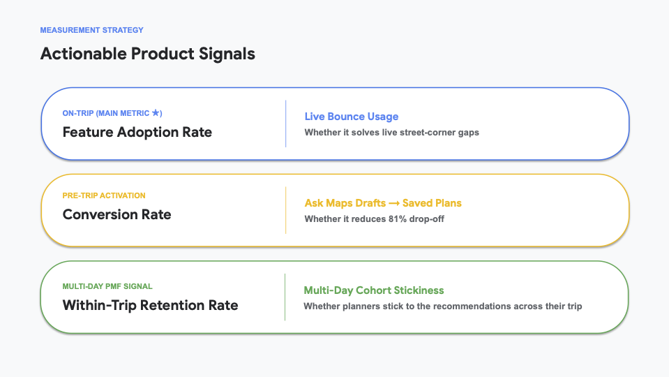
6. Ask Maps Evolution & Testing Realities
As Ask Maps expanded, focus sharpened on during-the-trip adaptation; testing stopped early because the scenario required dual Ask Maps + live-trip context needing more targeted participant screening, alongside static Claude map frames and Maze gesture limits.
- Ask Maps Evolution: Google had already been developing Ask Maps, and its itinerary planning and pin-organisation capabilities grew further by the time research and interviews ended. Revisiting our research data showed it helped pre-trip planning, but not saving plans cleanly or adapting mid-trip—shifting focus to during-the-trip adaptation.
- Why Testing Stopped (n = 2): The scenario required two conditions not accounted for upfront—users having used Ask Maps for pre-trip planning and needing itinerary adjustments/navigation during the trip—meaning participant recruitment needed to be much more targeted. Additionally, task prompts did not introduce Bounce beforehand (contributing to a 52.0% misclick rate and 1.5 / 5 ease on the gap task vs. 4.5 / 5 for feeling faster and less overwhelming, with 0% drop-off across tasks), and cold discoverability without framing was not the test goal.
- Medium & Tooling Limits: Generating screens with Claude produced static map frames rather than a live pan-and-zoom map, and Maze could not natively replicate drag-and-drop reordering or a time-scroller wheel.
7. Next Steps
Field-test bounceproto.netlify.app on mobile in real urban settings with targeted users, clearer upfront feature context, and refined time and discovery controls.
- Targeted Recruitment & Live Mobile Testing: Screen participants who both draft itineraries in Ask Maps and adjust plans on the go, testing bounceproto.netlify.app on mobile in real urban conditions rather than relying on simulated clicks.
- Framing & Control Refinement: Introduce feature context cleanly during evaluation and refine timing adjustments and nearby discovery controls.